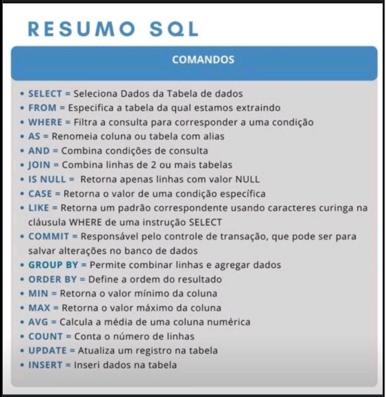
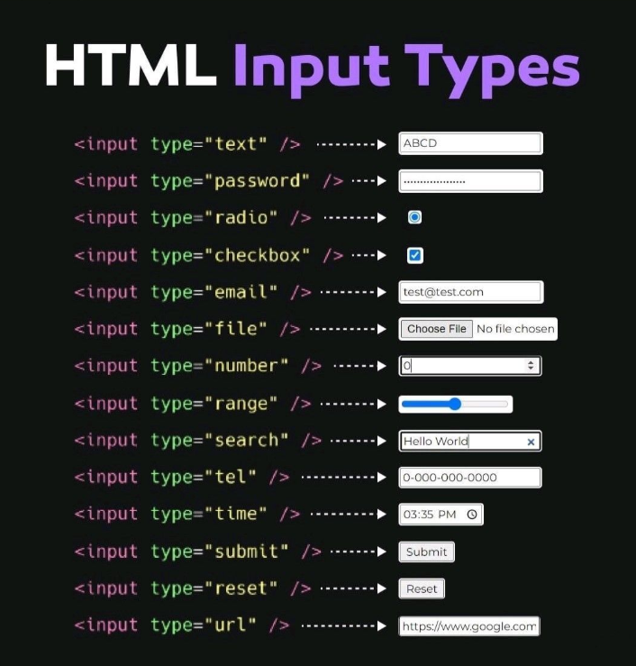
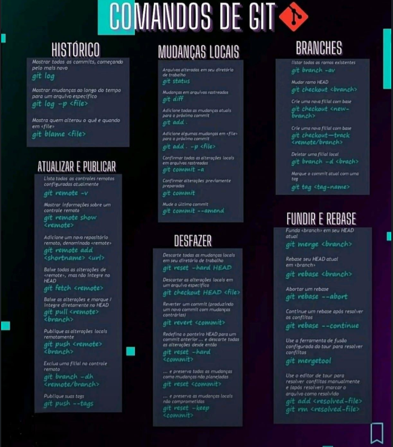

mar 2026 - atual
Desenvolvedora • Bradesco
Tecnologia aplicada à área de Finanças, com foco em Data Analytics, Business Intelligence e desenvolvimento de soluções para apoiar decisões estratégicas.
Desenvolvedora | Dados, BI e Sistemas
Sou Analista de Sistemas e Desenvolvedora, com experiência em sustentação, desenvolvimento de soluções, análise de dados e conteúdos educativos para quem está começando na tecnologia.
Transformo temas como SQL, Git, HTTP, HTML e POO em conteúdo prático para iniciantes.
Meu foco é mostrar onde cada conceito aparece no dia a dia de sistemas, dados e negócio.
Conteúdo educativo também revela clareza, documentação, empatia e raciocínio estruturado.
Sobre mim
Sou formada em Análise e Desenvolvimento de Sistemas e sigo em constante evolução por meio de cursos, prática e construção de soluções tecnológicas.
Antes da tecnologia, atuei na enfermagem, onde desenvolvi escuta, empatia, atenção aos detalhes e capacidade de resolver problemas sob pressão. Hoje aplico essa visão no desenvolvimento de sistemas, dados, indicadores e automações.
Também produzo conteúdos educativos sobre programação, dados e boas práticas, ajudando pessoas iniciantes a entenderem conceitos técnicos de forma simples e aplicável.
Experiência
Tecnologia aplicada à área de Finanças, com foco em Data Analytics, Business Intelligence e desenvolvimento de soluções para apoiar decisões estratégicas.
Sustentação e evolução de sistemas, com foco em estabilidade, performance, suporte a produção, deploys, testes e colaboração com equipes multidisciplinares.
Conteúdo educativo

Comandos essenciais, consultas e fundamentos para quem está começando.
Clique aqui
Explicação visual sobre campos de formulário e uso correto no frontend.
Clique aquiUma jornada de transição, superação e construção de confiança na tecnologia.
Clique aqui
Materiais para organizar versionamento, histórico e mensagens de commit.
Clique aquiLaboratório Tech
Esta área vai reunir ferramentas pequenas, úteis e bem acabadas, criadas a partir dos temas que mais ajudaram pessoas iniciantes.
Guia interativo para visualizar comandos SQL, exemplos de consulta e boas práticas.
Em breveBuscador de códigos HTTP com significado, categoria, exemplo e contexto de uso.
Em breveFerramenta para montar mensagens de commit no padrão Conventional Commits.
Em breveLaboratório para testar tipos de input e ver o código correspondente em tempo real.
Em breveStack
HTML, CSS, JavaScript, TypeScript, Node.js, Python, Java, Flutter
SQL, MySQL, Power BI, Data Analytics, Data Visualization, KPIs
Git, GitHub, Git Flow, Docker, Docker Compose, Scrum, Kanban
Microsoft Azure, AWS, engenharia de prompt, IA generativa e automação
Contato
Estou aberta a conexões, oportunidades em desenvolvimento, dados, BI e projetos que unam tecnologia, clareza e impacto real.